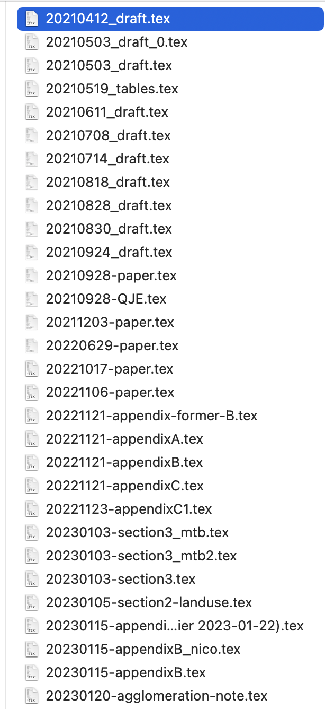

Version Control with Git
Florian Oswald and The Software Carpentry
Version What?
Question
- What is Version Control and Why Should I Care?
Objectives
- Understand the benefits of an automated version control system.
- Understand the basics of how automated version control systems work.
Final.doc

“Piled Higher and Deeper” by Jorge Cham, http://www.phdcomics.com
Undo
- The latest version is often best for text documents.
- However, sometimes our view of best evolves. Then, we want to undo.
- Undo means going back in history.
- MS Word etc have track changes features.
- Once you accepted the proposed changes of a collaborator, can you go back?
- What about Dropbox-like solutions? (What is dropbox actually?)
Which Version: 20210611_draft.tex
- Hey, fixed that thing last week.
- In
20220629-paper.tex? - Erm. Yes. No. I think
20211203-paper.tex- messed up the file name. - Ok, can you copy it into the latest version?
- Sure. Damn, can’t find it anymore. I’ll just write it again. All in my head. 🤯

Which Version 2: Why is the sample size so small suddenly?
- We had 800 observations, now 733. Why?
- Erm…😱 No clue!
- Well you must have changed the code.
- Yes, I improved the code in several parts.
- Well you have to find out what happened.
- But that was weeks ago - I don’t remember! 😢
Hard Bugs
- The hard bugs 🐛 are the ones you see only after a while.
- See result today, error was introduced long ago.
- You can rewind dropbox 30 days. What if… ?
- Also, throw away 30 days of work?
- 😱 😱 😱 😱
Setting Up Git
- We all installed
git. - Let’s setup our name
- Line Endings on Windows:
Creating a Git Repository
Question
- Where does Git store information?
Objectives
- Create a local repository
- Describe purpose of
.gitdirectory
Gas Prices Project
- Let’s create a project folder in our home to look at the gas prices from last week.
- Now the directory
~/gaspricesis endowed withgitversion control. - What does that look like?
Where is Git?
- Remember hidden files and folders?
- Git for this repository resides in
.git
Danger Zone
- If you delete that folder, the entire version control is GONE.
- Be very careful that you really want to do that.
Tracking Changes with Git
Question
- How do I record changes in Git?
- How do I check the status of my version control repository?
- How do I record notes about what changes I made and why?
Objectives
- Understand the benefits of an automated version control system.
- Understand the basics of how automated version control systems work.
Adding Code and Text
Note
- Notice: The code we produce is text.
- Remember what we learned about file endings.
- Let’s add a shell script where we add our pipeline from last week.
- run to get the raw data again:
Adding Code and Text
- create a script
nano maketable.sh # open nano
# type this:
cd ~/gasprices # make sure we are in the right place
cut -d ';' -f 5 carburants.csv | tr [:lower:] [:upper:] | sort | uniq -c | sort
# save and exit - (Does it work?)
Viewing Changes
- Ok, now let’s see what
gitmakes of our additions to this directory.
floswald@PTL11077 ~/gasprices (main)> git status
On branch main
No commits yet
Untracked files:
(use "git add <file>..." to include in what will be committed)
carburants.csv
maketable.sh- It is actually helpful not to use
bashas a shell… - Customizing your shell is an extremely effective procrastination device.
- You must know what shaving a Yak means before you walk out of my class.
Seeing the Difference
- the command
git diffshows you what changed between versions. - lets see what it shows now:
- It shows nothing, i.e. an empty diff, because there are no commits yet to compare with.
- Ok, let’s change that.
Modify-Add-Commit 1
- git reports about untracked files. We need to decide what to track.
- Move files to staging area:
- Notice that I did not want to track the
csvfile.
Modify-Add-Commit 2
- Now, let’s record what is in the staging area.
$ git commit -m 'added the maketable script'
[main (root-commit) 9956506] added the maketable script
1 file changed, 2 insertions(+)
create mode 100644 maketable.sh- check status:
Modify-Add-Commit 3
- Let’s check what’s in the log.
Modify-Add-Commit 4
- Now let’s modify the script finally.
$ nano maketable.sh
# add this line on top
echo hello user, will make a contigency table now.
# save and exit- now - what’s the difference in the repo?
Diffing
- there are still the same files here:
- But we can now compare versions:
$ git diff
diff --git a/maketable.sh b/maketable.sh
index 7e01058..3b7007e 100644
--- a/maketable.sh
+++ b/maketable.sh
@@ -1,2 +1,3 @@
+echo hello user, will make a contigency table now.
cd ~/gasprices # make sure we are in the right place
cut -d ';' -f 5 carburants.csv | tr [:lower:] [:upper:] | sort | uniq -c | sortCommiting Changes Again
- let’s first check everything runs
- good. commit!
Adding a README
- Good. Now let’s add a
READMEfile. - It’s customary to write this in markdown
write this in nano and save when done.
- add to staging area, so we can take a snapshot
What is this Staging Area
- git is like a foto camera.
- before you take a picture of your friends, you need to arrange them somehow, so that all fit, and all 😁.
- You put them on stage. Same for files in your repo.

figure from software carpentry
Looking at History
Question
- How can I identify old versions of files?
- How do I review my changes?
- How can I recover old versions of files?
Objectives
- Explain what the HEAD of a repository is and how to use it.
- Identify and use Git commit numbers.
- Compare various versions of tracked files.
- Restore old versions of files.
The most recent version: HEAD
- Let’s change the
maketable.shscript again:
- The most recent version of our repo is called
HEAD.
Whoops, typo
- Oh no, we wrote program run successfully. That should be ran not run.
- What now?
How to get a specific version
- What if you want something else than
HEAD? - like, the first version of
maketable.sh? - look at history:
$ git log --oneline --graph
* a6f023b (HEAD -> main) added readme
* 9956506 added the maketable script- The
9956506is the unique identifier of that version. - We can go back to that version:
Key Points
git diffdisplays differences between commits.git checkoutrecovers old versions of files.
So, how does this thing work?

software carpentry image.
Version Control with VScode
- Download Visual Studio Code
- Start
- Open folder
~/gasprices - check version control tab on the left.
Version Control with RStudio
- top right click on new project
- Select existing directory
- Select
~/gasprices - checkout out the
gittab in Rstudio!
Collaborating with Git on GitHub
- Create repo
- copy ssh remote URL
- connect local to remote repo
SSH connections
- Secure Shell Protocol
- Private-Public key pair. It’s like a lock, and you have the only key.
- Let’s check if you have one already!
if error, create one:
press enter (no passphrase)
check
Communicate with GitHub Remote
- Let’s ping the remote server at GitHub now.
right, of course Github doesn’t have our public key yet (the lock for our key!)
copy from your terminal
- Go to github.com, click top right corner, settings, SSH keys.
Adding a Remote to your local Repo
- Now that we can talk to Github.com, let’s add the remote to our local repo.
- We
adda remote by getting theSSHurl from the repository (green button) online.
originis the name of the remote server. your choice, but origin is common.- this should set that remote both for sending and retrieving stuff from the repo. pull and push, in git language:
Pushing It
- Now we can push our local repository to the remote repo.
- There will be a full copy of what is in
.git(i.e., the entire history of the repo) on that remote machine. - You will be able to use it like a central backup location for your work.
- the
-uflag sets the main branch as default upstream branch to track.
ScPo Intro To Programming 2023